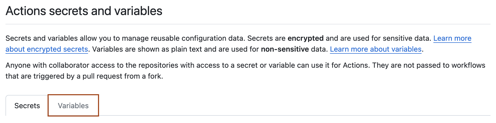

GitHub sets default variables for each GitHub Actions workflow run. You can also set custom variables for use in a single workflow or multiple workflows.
Defining environment variables for a single workflow
To set a custom environment variable for a single workflow, you can define it using the env key in the workflow file. The scope of a custom variable set by this method is limited to the element in which it is defined. You can define variables that are scoped for:
The entire workflow, by using env at the top level of the workflow file.
The contents of a job within a workflow, by using jobs.<job_id>.env.
name: Greeting on variable day
on:
workflow_dispatch
env:
DAY_OF_WEEK: Monday
jobs:
greeting_job:
runs-on: ubuntu-latest
env:
Greeting: Hello
steps:
- name: "Say Hello Mona it's Monday"
run: echo "$Greeting $First_Name. Today is $DAY_OF_WEEK!"
env:
First_Name: Mona
You can access env variable values using runner environment variables or using contexts. The example above shows three custom variables being used as runner environment variables in an echo command: $DAY_OF_WEEK, $Greeting, and $First_Name. The values for these variables are set, and scoped, at the workflow, job, and step level respectively. The interpolation of these variables happens on the runner.
The commands in the run steps of a workflow, or a referenced action, are processed by the shell you are using on the runner. The instructions in the other parts of a workflow are processed by GitHub Actions and are not sent to the runner. You can use either runner environment variables or contexts in run steps, but in the parts of a workflow that are not sent to the runner you must use contexts to access variable values. For more information, see Using contexts to access variable values.
Because runner environment variable interpolation is done after a workflow job is sent to a runner machine, you must use the appropriate syntax for the shell that's used on the runner. In this example, the workflow specifies ubuntu-latest. By default, Linux runners use the bash shell, so you must use the syntax $NAME. By default, Windows runners use PowerShell, so you would use the syntax $env:NAME. For more information about shells, see Workflow syntax for GitHub Actions.
Defining configuration variables for multiple workflows
You can create configuration variables for use across multiple workflows, and can define them at either the organization, repository, or environment level.
For example, you can use configuration variables to set default values for parameters passed to build tools at an organization level, but then allow repository owners to override these parameters on a case-by-case basis.
To create secrets or variables on GitHub for an organization repository, you must have write access. For a personal account repository, you must be a repository collaborator.
On GitHub, navigate to the main page of the repository.
Under your repository name, click Settings. If you cannot see the "Settings" tab, select the dropdown menu, then click Settings.
In the "Security" section of the sidebar, select Secrets and variables, then click Actions.
Click the Variables tab.

Click New repository variable.
In the Name field, enter a name for your variable.
In the Value field, enter the value for your variable.
Click Add variable.
Creating configuration variables for an environment
To create secrets or variables for an environment in a personal account repository, you must be the repository owner. To create secrets or variables for an environment in an organization repository, you must have admin access. For more information on environments, see Managing environments for deployment.
On GitHub, navigate to the main page of the repository.
Under your repository name, click Settings. If you cannot see the "Settings" tab, select the dropdown menu, then click Settings.
In the left sidebar, click Environments.
Click on the environment that you want to add a variable to.
Under Environment variables, click Add variable.
In the Name field, enter a name for your variable.
In the Value field, enter the value for your variable.
Click Add variable.
Creating configuration variables for an organization
Note
Organization-level secrets and variables are not accessible by private repositories for GitHub Free. For more information about upgrading your GitHub subscription, see Upgrading your account's plan.
When creating a secret or variable in an organization, you can use a policy to limit access by repository. For example, you can grant access to all repositories, or limit access to only private repositories or a specified list of repositories.
Organization owners can create secrets or variables at the organization level.
On GitHub, navigate to the main page of the organization.
Under your organization name, click Settings. If you cannot see the "Settings" tab, select the dropdown menu, then click Settings.
In the "Security" section of the sidebar, select Secrets and variables, then click Actions.
Click the Variables tab.
Click New organization variable.
In the Name field, enter a name for your variable.
In the Value field, enter the value for your variable.
From the Repository access dropdown list, choose an access policy.
Click Add variable.
Using contexts to access variable values
Contexts are a way to access information about workflow runs, variables, runner environments, jobs, and steps. For more information, see Contexts reference. There are many other contexts that you can use for a variety of purposes in your workflows. For details of where you can use specific contexts within a workflow, see Contexts reference.
You can access environment variable values using the env context and configuration variable values using the vars context.
Using the env context to access environment variable values
In addition to runner environment variables, GitHub Actions allows you to set and read env key values using contexts. Environment variables and contexts are intended for use at different points in the workflow.
The run steps in a workflow, or in a referenced action, are processed by a runner. As a result, you can use runner environment variables here, using the appropriate syntax for the shell you are using on the runner - for example, $NAME for the bash shell on a Linux runner, or $env:NAME for PowerShell on a Windows runner. In most cases you can also use contexts, with the syntax ${{ CONTEXT.PROPERTY }}, to access the same value. The difference is that the context will be interpolated and replaced by a string before the job is sent to a runner.
However, you cannot use runner environment variables in parts of a workflow that are processed by GitHub Actions and are not sent to the runner. Instead, you must use contexts. For example, an if conditional, which determines whether a job or step is sent to the runner, is always processed by GitHub Actions. You must therefore use a context in an if conditional statement to access the value of a variable.
In this modification of the earlier example, we've introduced an if conditional. The workflow step is now only run if DAY_OF_WEEK is set to "Monday". We access this value from the if conditional statement by using the env context. The env context is not required for the variables referenced within the run command. They are referenced as runner environment variables and are interpolated after the job is received by the runner. We could, however, have chosen to interpolate those variables before sending the job to the runner, by using contexts. The resulting output would be the same.
Contexts are usually denoted using the dollar sign and curly braces, as ${{ context.property }}. In an if conditional, the ${{ and }} are optional, but if you use them they must enclose the entire comparison statement, as shown above.
Warning
When creating workflows and actions, you should always consider whether your code might execute untrusted input from possible attackers. Certain contexts should be treated as untrusted input, as an attacker could insert their own malicious content. For more information, see Secure use reference.
Using the vars context to access configuration variable values
Configuration variables can be accessed across the workflow using vars context. For more information, see Contexts reference.
If a configuration variable has not been set, the return value of a context referencing the variable will be an empty string.
The following example shows using configuration variables with the vars context across a workflow. Each of the following configuration variables have been defined at the repository, organization, or environment levels.
on:
workflow_dispatch:
env:
# Setting an environment variable with the value of a configuration variable
env_var: ${{ vars.ENV_CONTEXT_VAR }}
jobs:
display-variables:
name: ${{ vars.JOB_NAME }}
# You can use configuration variables with the `vars` context for dynamic jobs
if: ${{ vars.USE_VARIABLES == 'true' }}
runs-on: ${{ vars.RUNNER }}
environment: ${{ vars.ENVIRONMENT_STAGE }}
steps:
- name: Use variables
run: |
echo "repository variable : $REPOSITORY_VAR"
echo "organization variable : $ORGANIZATION_VAR"
echo "overridden variable : $OVERRIDE_VAR"
echo "variable from shell environment : $env_var"
env:
REPOSITORY_VAR: ${{ vars.REPOSITORY_VAR }}
ORGANIZATION_VAR: ${{ vars.ORGANIZATION_VAR }}
OVERRIDE_VAR: ${{ vars.OVERRIDE_VAR }}
- name: ${{ vars.HELLO_WORLD_STEP }}
if: ${{ vars.HELLO_WORLD_ENABLED == 'true' }}
uses: actions/hello-world-javascript-action@main
with:
who-to-greet: ${{ vars.GREET_NAME }}
Detecting the operating system
You can write a single workflow file that can be used for different operating systems by using the RUNNER_OS default environment variable and the corresponding context property ${{ runner.os }}. For example, the following workflow could be run successfully if you changed the operating system from macos-latest to windows-latest without having to alter the syntax of the environment variables, which differs depending on the shell being used by the runner.
on: workflow_dispatch
jobs:
if-Windows-else:
runs-on: macos-latest
steps:
- name: condition 1
if: runner.os == 'Windows'
run: echo "The operating system on the runner is $env:RUNNER_OS."
- name: condition 2
if: runner.os != 'Windows'
run: echo "The operating system on the runner is not Windows, it's $RUNNER_OS."
In this example, the two if statements check the os property of the runner context to determine the operating system of the runner. if conditionals are processed by GitHub Actions, and only steps where the check resolves as true are sent to the runner. Here one of the checks will always be true and the other false, so only one of these steps is sent to the runner. Once the job is sent to the runner, the step is executed and the environment variable in the echo command is interpolated using the appropriate syntax ($env:NAME for PowerShell on Windows, and $NAME for bash and sh on Linux and macOS). In this example, the statement runs-on: macos-latest means that the second step will be run.
Passing values between steps and jobs in a workflow
If you generate a value in one step of a job, you can use the value in subsequent steps of the same job by assigning the value to an existing or new environment variable and then writing this to the GITHUB_ENV environment file. The environment file can be used directly by an action, or from a shell command in the workflow file by using the run keyword. For more information, see Workflow commands for GitHub Actions.
If you want to pass a value from a step in one job in a workflow to a step in another job in the workflow, you can define the value as a job output. You can then reference this job output from a step in another job. For more information, see Workflow syntax for GitHub Actions.